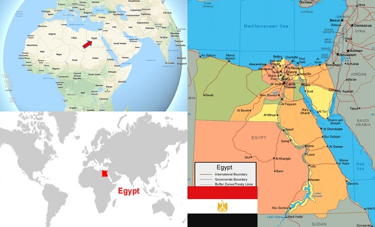

All About Egypt
FMIPA Unhas
Introduction

| Deskripsi Negara |
| Nama Negara |
Republik Arab Mesir |
| Tahun Kemerdekaan |
1945 |
| Lagu Kebangsaan |
بلادي بلادي بلادي (Biladi, Biladi, Biladi) |
| Bahasa |
Arab |
| Luas |
1.010.407 km2 |
Republik Arab Mesir adalah sebuah negara yang sebagaian besar terletak di Afrika. Mesir merupakan salah satu negara tertua di dunia. Mesir telah berusia lebih dari 5000 tahun.
Mesir adalah negara pertama yang mengakui kedaulatan Indonesia. Kekuasaan di Mesir diatur dengan sistem semipresidensial multipartai.
Mesir berbatasan dengan
- Libya di sebelah barat
- Sudan di selatan
- jalur Gaza Palestina dan Israel di timur laut
- Laut Tengah di utara
- Laut Merah di timur
Mesir merupakan negara Arab dengan banyak penduduknya sekitar 74 juta orang. 90% dari penduduk Mesir adalah penganut Islam, mayoritas Sunni dan sebagian juga menganut ajaran Sufi lokal.
Sekitar 10% penduduk Mesir menganut agama Kristen; 78% dalam denominasi Kubti (Kubti Ortodoks, Katolik Kubti, dan Protestan Kubti).
Mesir terkenal dengan peradaban kuno dan beberapa monumen kuno termegah di dunia misalnya Piramid Giza, Kuil Karnak, Lembah Para Raja serta Kuil Ramses